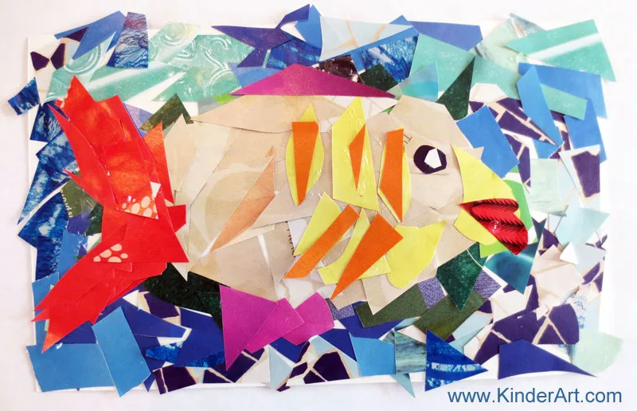
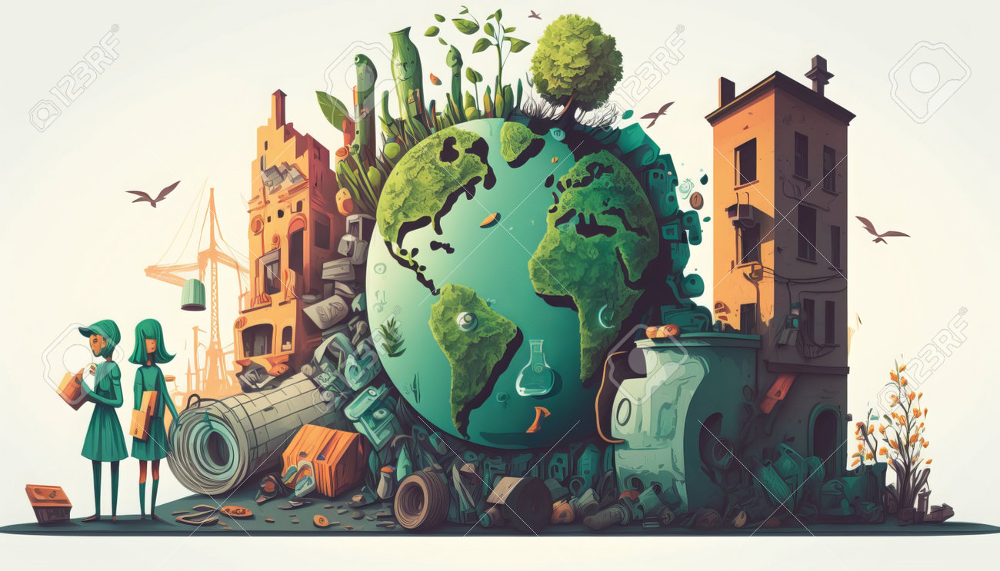

Incredible Benefits of Recycled Material Projects

1. Environmental Stewardship
Engaging in recycled material projects instils environmental responsibility in children. By repurposing discarded items, kids learn about waste reduction, resource conservation, and the importance of recycling. Through these recycled crafts activities, they become young eco-warriors, understanding their role in preserving our planet for the future.
2. Resourcefulness and Problem-Solving
Crafting with recycled materials encourages resourcefulness and problem-solving skills. Children develop the ability to think creatively and find innovative solutions as they turn everyday items into unique creations. This nurtures a mindset of adaptability, preparing them for future challenges with confidence.
3. Sensory Development
Hands-on engagement with diverse textures and materials enhances sensory development in young learners. The tactile experience of working with recycled materials stimulates their senses, fostering a deeper connection to the learning process. This sensory-rich environment not only supports cognitive development but also makes learning a joyous, immersive experience.
4. Educational Value
Recycled material projects provide valuable educational opportunities. From understanding the concept of recycling to exploring the properties of different best out-of-waste craft materials, these activities seamlessly integrate learning into enjoyable hands-on experiences. This holistic approach to education ensures that children grasp fundamental concepts while having fun in a practical setting.
5. Budget-Friendly Creativity
Crafting with recycled materials is cost-effective, making creativity accessible to all. Parents and teachers can create engaging projects without breaking the bank, fostering an inclusive environment for artistic expression. This not only promotes financial responsibility but also teaches children that creativity knows no bounds, regardless of financial constraints.
6. Emotional Connection
The process of transforming discarded items into meaningful creations fosters an emotional connection to the finished projects. Children take pride in their work, developing a sense of accomplishment and appreciation for the impact of their efforts on the environment. This emotional connection nurtures a positive self-image and a deeper understanding of the value of their contributions.
Reduce-Reuse-Recycle

The 3 'R's
Reduce, Reuse, Recycle – these three 'R' words are an important part of sustainable living, as they help to cut down on the amount of waste we have to throw away.
It's Really simple!
Reduce the amount of waste you produce.
Reuse items as much as you can before replacing them.
Recycle items wherever possible.
Using the 3 'R's also helps to minimise the amount of space needed for landfill sites, where waste materials are disposed of.